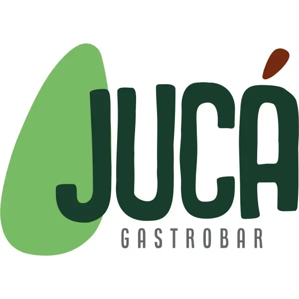
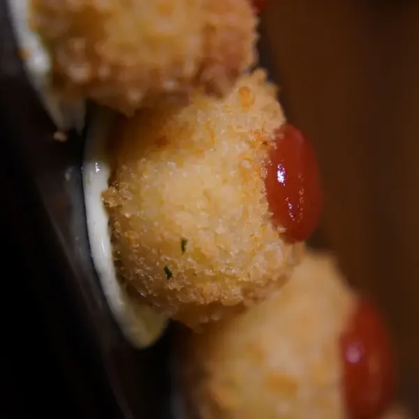
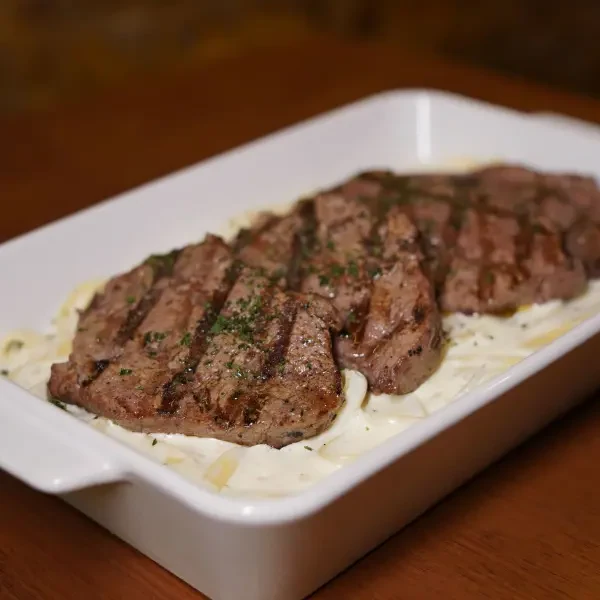
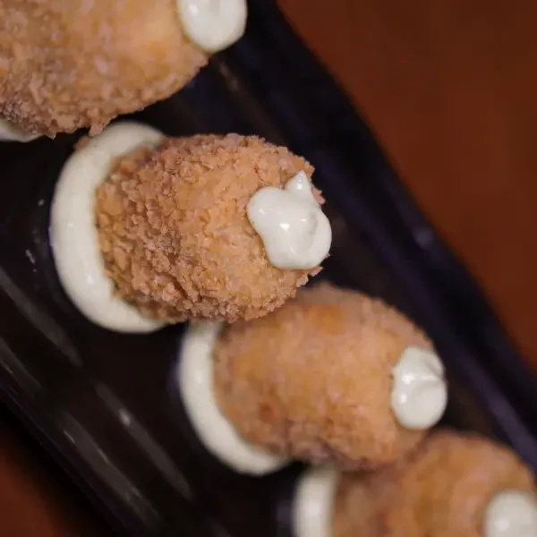
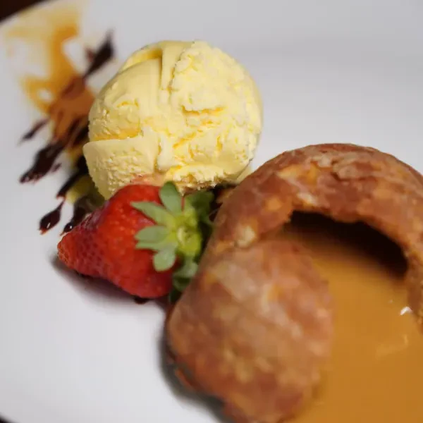

Pastéis de carne de sol
Carne de sol, muçarela e catupiry com aioli defumado.

Combinar uma mesaPetiscos para dividir, pratos para ficar à mesa e bebidas para acompanhar a conversa. Recebemos você no Jucá, no Centro de Sobral.
Ver nosso cardápio


Para começar a conversa, escolha entre porções crocantes, receitas regionais e preparos para compartilhar.
Nosso cardápio vai além dos petiscos. Há carnes, pescados e acompanhamentos para quem quer almoçar ou jantar conosco.
Filé mignon, molho de queijos e fritas.
Uma das opções de pescados do repertório, com arroz de castanha.

Mascarpone, biscoito champanhe ao café e cacau.
Servido com sorvete de creme, entre as sobremesas da casa.
A disponibilidade das receitas e os valores são informados pela equipe.
Um encontro a dois ou uma conversa entre amigos: avise a data e a quantidade de pessoas para organizarmos a visita.
Temos ambiente climatizado e mesas ao ar livre. Para acompanhar as novidades da casa e a programação musical, veja nosso Instagram.
WhatsApp (88) 99354-6969
Abrir conversaPara confirmar o funcionamento na data da sua visita, use nosso contato ou acompanhe as publicações do Instagram.
Você pode escolher petiscos e porções para dividir. O menu também traz pratos e sobremesas para quem quiser seguir à mesa.
Envie pelo WhatsApp a data e a quantidade de pessoas. A equipe orienta sobre acomodação e disponibilidade.
No nosso Instagram, @juca.gastrobar. Confira as publicações para escolher o dia da visita.
Fale com a equipe antes de pedir para verificar ingredientes e condições de preparo.